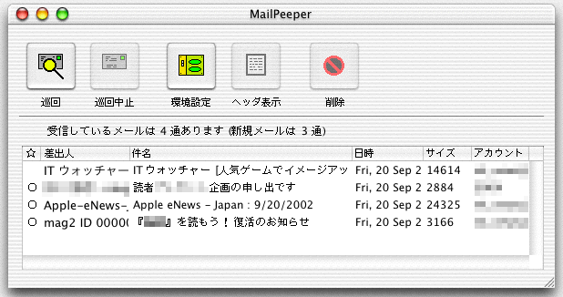
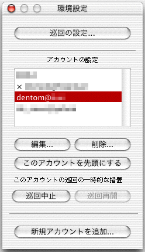
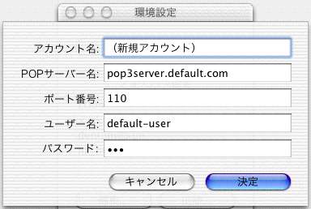
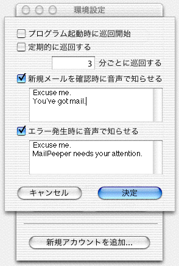
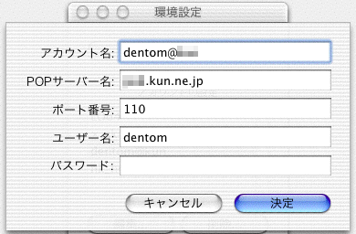

最初にすべきこと
MailPeeperにはインストーラーはありません。好きな場所に置いて、ただちに御利用できます。
Mac OS Xなら「アプリケーション」または「Applications」などに置いておくとよいでしょう。
MailPeeperを使うにあたって、最初にすべきことは「アカウントの設定」です。
MailPeeperを起動すると１枚だけ以下のようなウィンドウが現れます。

ここで「環境設定」ボタンを押してください。
すると以下のようなウィンドウがあらわれます。

このウィンドウの最も下についている「新規アカウントを追加」ボタンを押します。
すると、以下のようなアカウントを設定するための入力画面に変わります。

この画面で必要な情報を設定してください。設定の詳細はアカウントの設定を参考にしてください。
メインウィンドウ
プログラムを起動すると１枚だけ以下のようなウィンドウが現れます。
ほとんどの操作はウィンドウの上にあるボタンだけで行えます。
ボタンを押すと以下のような挙動をします。
●巡回 − メールサーバーにアクセスし、受信しているメールの一覧を表示します。
●巡回中止 − 巡回ボタンによって始めた処理を中止します。
●環境設定 − 環境設定ウィンドウを表示します。各種設定をしたい時に押します。
●ヘッダ表示 − 一覧で選択したメールのヘッダ部分を表示します。
●削除 − 一覧で選択したメールを削除します。
環境設定ウィンドウ
環境設定ボタンか環境設定メニューで以下のようなウィンドウが現れます。
ボタンを押すと以下のような挙動をします。
●巡回の設定 − 巡回に関する設定を行うため、巡回の設定画面を開きます。
●編集 − 選択されたアカウント設定を変更するため、アカウントの設定画面を開きます。
●削除 − 選択されたアカウントを削除します。
●このアカウントを先頭にする − 選択されたアカウントを最初に巡回させます。
●巡回中止 − 選択されたアカウントの巡回を一時的に中止します。
●巡回再開 − 一時的に中止したアカウントの巡回を再開させます。
●新規アカウントを追加 − 新規アカウントを追加し、アカウントの設定画面を開きます。
巡回の設定
環境設定ウィンドウで「巡回の設定」ボタンを押すと以下のような画面が開きます。

それぞれの項目で以下のような設定をします。
●プログラム起動時に巡回開始 − ここを有効にしておくとプログラム起動と同時にメールチェックをします。
●定期的に巡回する − ここを有効にしておくと指定した間隔（分単位）でメールチェックを繰り返します。
●新規メールを確認時に音声で知らせる − ここを有効にしておくと新規メール到着を音声で知らせます。
●エラー発生時に音声で知らせる − ここを有効にしておくとエラー発生時に、そのことを音声で知らせます。
アカウントの設定
環境設定ウィンドウで「編集」または「新規アカウントを追加」ボタンを押すと以下の画面が開きます。

それぞれの項目で以下のような設定をします。
●アカウント名 − ここには好きな名前を設定してください。
●ＰＯＰサーバー名 − メールサーバーのアドレスを設定します。
●ポート番号 − 通常は１１０を設定しておくとよいでしょう。
●ユーザー名 − メールサーバーにログインするユーザー名を設定します。
●パスワード − ログインするときのパスワードを設定します。
その他の説明
●御利用にあたっての注意
本ソフトはGPL扱いとしますので、自由に再配布してくださって結構です。
ただしソフトやソースファイルを利用したことで何らかのトラブルや
不具合に会われても保障できません。責任も取れません。悪しからず。
●逆インストール
単にMailPeeperを削除するだけです。また、~/Library/Preferences/というフォルダに
jp.Dentom.MailPeeper.plistという設定ファイルができてますので、これも削除します。
●開発履歴
・2002年11月10日 - Ver.1.0.2 - バグフィックスと細かい改良版。
ごくマレではあるが巡回したままになる症状を対策。
ドックメニューでも巡回と巡回中止ができるよう変更。
状況に応じてドックアイコンが変化するように変更。
エラーのときに音声で知らせる設定を追加。
・2002年10月2日 - Ver.1.0.1 - バグフィックスと細かい改良版。
先頭が大文字で後に小文字が続く形式でないヘッダ(From:でなくFROM:など)に対応。
新規メール受信中に先頭から逐次表示するよう変更。
「=?iso-2022-jp?b?」なヘッダに対応。
・2002年9月21日 - Ver.1.0.0 - 最初のヴァージョン。
Mac OS X 10.2のProject Builderで作成。Objective-C + Cocoa。
●ホームページ
http://dentom.hp.infoseek.co.jp/
●作成者と連絡先
Dentom dentom_soft@anet.ne.jp